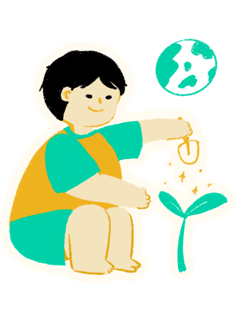

西屯願景
活力
12年國教強調學生應具備知識、能力與態度以適應未來生活挑戰，學校積極發展多元五感課程，培養學生全人發展，展現好學力與好活力。創新
「核心素養」強調不以學科知識為限，關注學習與生活的結合。以「創意學，學創意」為核心，營造創意的環境，透過各項創意教學與競賽活動，培養具創意有競爭力的學生，打造創意優質的學園。

永續
百年西屯在地文化，融入生活美學，培養學生「飲水思源、感恩惜福」的生命關懷，透過以融入式的主題統整課程，讓學習得以永續傳承，以適應未來生活挑戰。美善
規劃跨領域主題課程及學習領域活化，將閱讀、美學、科技、國際本位融入課程，多元閱讀中獲得改變生活價值的美感。透過人文關懷與實踐體驗活動，涵養學生心性，俾利終身學習及生活美學的實踐。西屯校歌
School Song
00:00/00:00
西屯校徽
School Emblem
校徽設計
2023年適逢120周年校慶活動，為延續新與舊的傳承願景，重新設計校徽。圖形之設計：簡明易懂，又深具其內涵，於焉訂之。校徽意義
新校徽沿襲舊校徽的設計脈絡，僅微調字體的線條，放入西屯的創校年份，突顯創校百年。加入英文字體，表示與國際接軌；當中使用哈佛紅當底色，延續「創新 永續 活力 美善」願景，象徵學校的熱情及邁向卓越之精神。